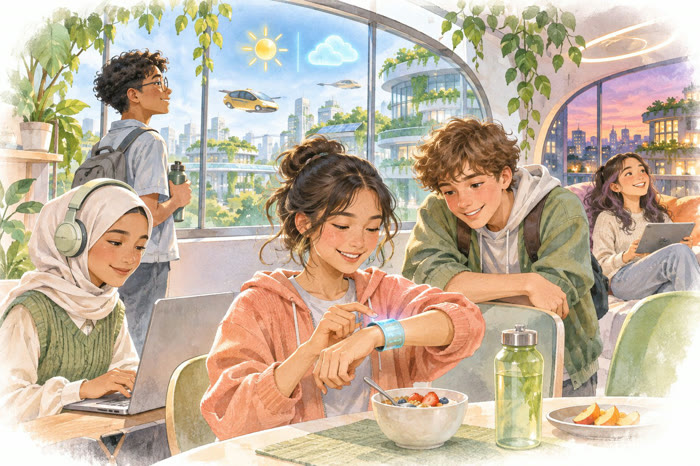

Listen to the text
Speed:

Our Physics teacher asked us to imagine an ordinary day of a teenager in the year 2060. "Use only the technologies that scientists are already working on," she said. "No magic." Here is my story. My name is Lesia, and today is Tuesday, 14 September 2060. I wake up at seven. Nobody shouts "Get up!". The window slowly becomes light, and the floor starts to heat my feet. Our flat is run by an artificial intelligence called Dyvo. It knows that I hate mornings, so it speaks quietly. I don't have a phone. I have a thin flexible screen that I wear around my wrist like a bracelet. When I need a bigger picture, I unfold it to the size of a book. Its interface has no buttons. I just talk to it or move my fingers in the air. At school we have Biology. Today we are studying the heart. We put on glasses for augmented reality, and a human heart appears in the middle of the classroom, as big as a car. We walk around it and watch how it works. My friend Ustym puts his head inside and says that it is noisy. After the lesson our teacher shows us a real operation on the screen. A surgeon in Kyiv is treating a patient in a small mountain village. She is not in the same room, and not even in the same region. She moves her hands, and a robot repeats every movement. Robotic surgery has changed medicine: a village hospital can now get the best doctor in the country. In the afternoon I have my favourite club, Space Geography. My cousin works on a spacecraft that studies asteroids. Scientists hope to find rare metals there. Once a month she sends us a video from space, and we ask her questions. Today she showed us how she washes her hair. The whole solar system is behind her window, and she is complaining about shampoo. In the evening I do my homework. Dyvo could write my essay in a second, but it doesn't. Artificial intelligence at school is allowed to explain, not to do the work for us. I think that is fair. Sometimes. Before I fall asleep, I look at the sky. There are more lights than in my grandmother's childhood, and some of them are moving. Some things, however, haven't changed. I still have to tidy my room myself.
Tap any sentence to hear it again.
Сподобалось? На сайті ще більше матеріалів для вчителів!
Reader, презентації, ігри, діагностичні та контрольні роботи до підручників 1-11 класів.
Перейти на сайт materials.allaenglish.com